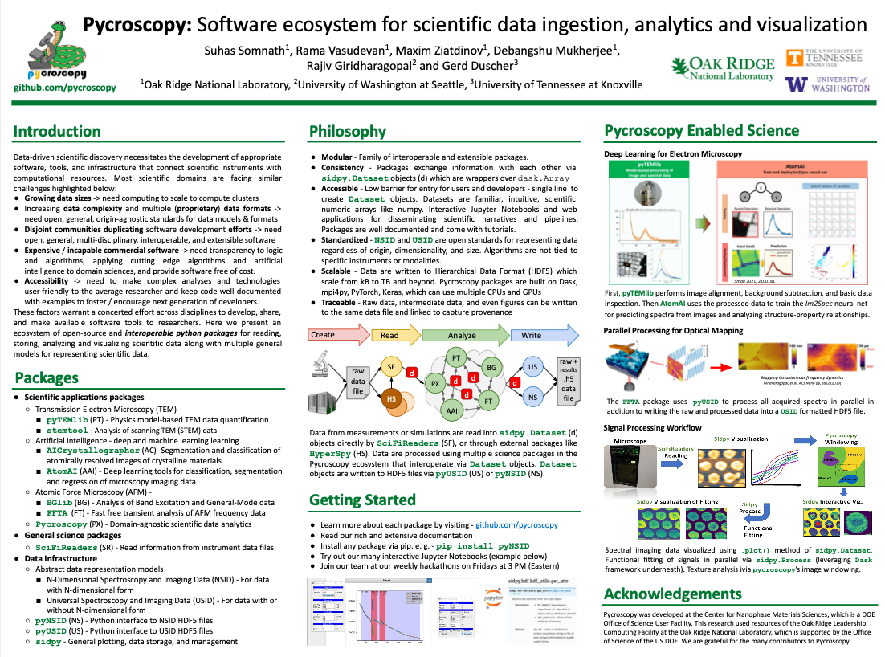
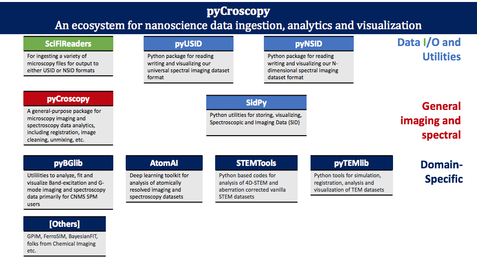

Pycroscopy Ecosystem¶
Please see the poster below (click) for an overview of the Pycroscopy ecosystem
Structure¶
The following diagram provides a graphical representation and description of the several python packages that make up the pycroscopy ecosystem.
Here is a brief overview of various technologies and packages that comprise the pycroscopy ecosystem:
General scientific packages:
SciFiReaders – tools to extract data and metadata out of vendor specific data files. Extracted information is stored only in memory
Pycroscopy – scientific and data analytics tools that can be used across scientific domains
Application scientific packages:
pyTEMlib - Physics model-based TEM data quantification library
stemtool - Tools to analyze atomic resolution STEM, 4D-STEM and STEM-EELS datasets
atomAI - Deep and machine learning for atomic-scale and mesoscale data
AICrystallographer - Deep and machine learning models that aid in automated analysis of atomically resolved images
BGlib - Utilities to analyze Band Excitation and General Mode Data for ORNL’s Center for Nanophase Materials Science SPM users
FFTA - Fast Free Transient Analysis of atomic force microscopy data
Data infrastructure - domain agnostic
sidpy – core engineering tools to support scientific packages and file I/O packages
Abstract models to represent data:
USID – Universal Spectroscopy and Imaging and Data model – General model for representing data with or without N-dimensional forms
NSID – N-Dimensional Spectroscopy and Imaging Data model – Model for data with a clear N-dimensional form
Interfaces to reading and writing pycroscopy formatted data into Hierarchical Data Format Files (HDF5):
Philosophy¶
Vision¶
With the pycroscopy ecosystem, we aim to:
significantly lower the barrier to advanced data analysis procedures by simplifying I/O, processing, visualization, etc.
serve as a hub for collaboration across scientific domains (microscopists, material scientists, biologists…)
For more information, please consider reading our Arxiv paper.
Why?¶
As we see it, there are a few opportunities in scientific imaging (that surely apply to several other scientific domains):
- 1. Growing data sizes
Cannot use desktop computers for analysis
Need: High performance computing, storage resources and compatible, scalable file structures
- 2. Increasing data complexity
Sophisticated imaging and spectroscopy modes resulting in 5,6,7… dimensional data
Need: Robust software and generalized data formatting
- 3. Multiple file formats
Different formats from each instrument. Proprietary in most cases
Incompatible for correlation
Need: Open, instrument-independent data format
- 4. Disjoint communities
Similar analysis routines written by each community (SPM, STEM, TOF SIMs, XRD…) independently!
Need: Centralized repository, instrument agnostic analysis routines that bring communities together
- 5. Expensive analysis software
Software supplied with instruments often insufficient / incapable of custom analysis routines
Commercial software (Eg: Matlab, Origin..) are often prohibitively expensive.
Need: Free, powerful, open source, user-friendly software
- 6. Closed science
Analysis software and data not shared
No guarantees of reproducibility or traceability
Need: open source data structures, file formats, centralized code and data repositories
How?¶
Modularity - The pycroscopy ecosystem is modular in that it separates codes necessary to read data from instruments, write data to open formats, generic engineering tools, common scientific kernels, and the domain specific applications themselves. This will allow users to freely use components from the various packages.
Low entry barriers - The pycroscopy ecosystem aims to lower the barrier to entry for both users and developers as much as possible. Information is exchanged across the pycroscopy ecosystem via sidpy.Dataset objects which are thin wrappers on dask.array. These
sidpy.Datasetscan be created from popular numpy or dask arrays with just one line of code. Users can continue to slice and perform matrix operations onsidpy.Datasetsjust as they would withnumpyarrays. Code already developed by researchers can easily be adapted to usesidpy.Datasetsin place ofnumpyordaskarrays.Consistency - Regardless of the dimensionality (conventional 1D spectra and 2D images to 9D hyperspectral datasets and beyond!), size, instrument (or simulation) of origin (AFMs, STEMs, Raman spectroscopy etc.), data can be represented as
sidpy.Datasetswhich are exchangeable and interoperable.Open data and file formats - Regardless of the dimensionality, size, origin (instrument, simulation, data processing, data analysis), data can be written into
USIDorNSIDformatted HDF5 files. HDF5 files themselves are one of the defacto standards for storing data in scientific research.Scalability -
Storage - hierarchical data format (HDF5) files have numerous benefits including flexibility in storing multiple datasets of arbitrary sizes and dimensionality, storage of metadata, and work readily on laptops as well as supercomputers.
Computation - The engineering packages in the pycroscopy ecosystem offer means to use multiple CPU cores, multiple GPUs, to multiple nodes in a high performance computing cluster through the use of scalable packages such as
pyTorch,Tensor Flow,dask.distributed,mpi4py, andjoblib.
Accessibility - Scientific workflows are developed and disseminated through jupyter notebooks that are interactive and portable web applications containing text, images, code / scripts, and graphical results. Notebooks containing the workflow from raw data to publishable figures often become supplementary material for journal publications thereby juxtapositioning the data analytics and computations with articles.
Traceability and Reproducibility -
Workflows - Well crafted and annotated Jupyter Notebooks alongside software containers allow users to reproduce data processing steps.
Storage -
sidpyoffers tools that allow results of computations / data processing to be stored alongside the source datasets along with links in the same HDF5 file